04. Networking
👈 Back to: 📝 Blog | 💼 LinkedIn | ✍️ Medium
4 Networking on AWS
❓ What actually happens inside a VPC when your app talks to the internet?
Introduction to Networking in AWS
What Is Networking?
Networking is the routing of data between uniquely identified endpoints using IP addresses across a global network.
- Networking enables computers to communicate with each other.
- In AWS, networking spans Regions, Availability Zones, and data centers.
- AWS operates a global network connecting these resources.
Networking Basics
- Communication requires:
- Source
- Destination
- Data (payload)
- Messages are delivered using routing, which determines the path to the destination.
IP Addresses
- An IP address uniquely identifies a computer on a network.
- Computers use binary addresses (0s and 1s) for routing.
- IPv4 addresses are 32‑bit values.
IPv4 Notation
- IPv4 is written in decimal format for readability.
- The 32 bits are split into 4 groups of 8 bits (octets).
- Each octet is converted to a decimal number and separated by dots
- Example format:
x.x.x.x
- Example format:
IPv4 → CIDR (why you need ranges)
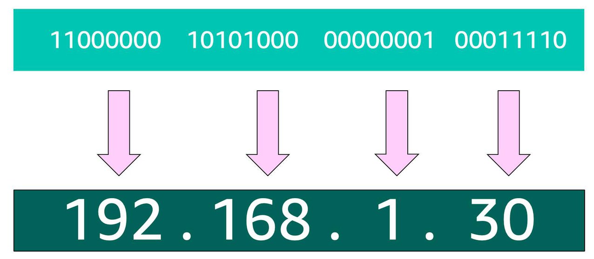
- IPv4 identifies a single host (32 bits → dotted decimal
x.x.x.x). - Networks need ranges, not single IPs → use CIDR.
CIDR Notation (range)
- Format:
STARTING_IP/NUMBER_OF_FIXED_BITS- Example:
192.168.1.0/24→ first 24 bits fixed → 256 IPs (2⁸).
- Example:
- In AWS:
- Smallest VPC/subnet range: /28 = 16 IPs
- Largest VPC range: /16 = 65,536 IPs
- AWS reserves 5 IPs per subnet, so small subnets lose usable space fast.
AWS VPC (what you must choose)
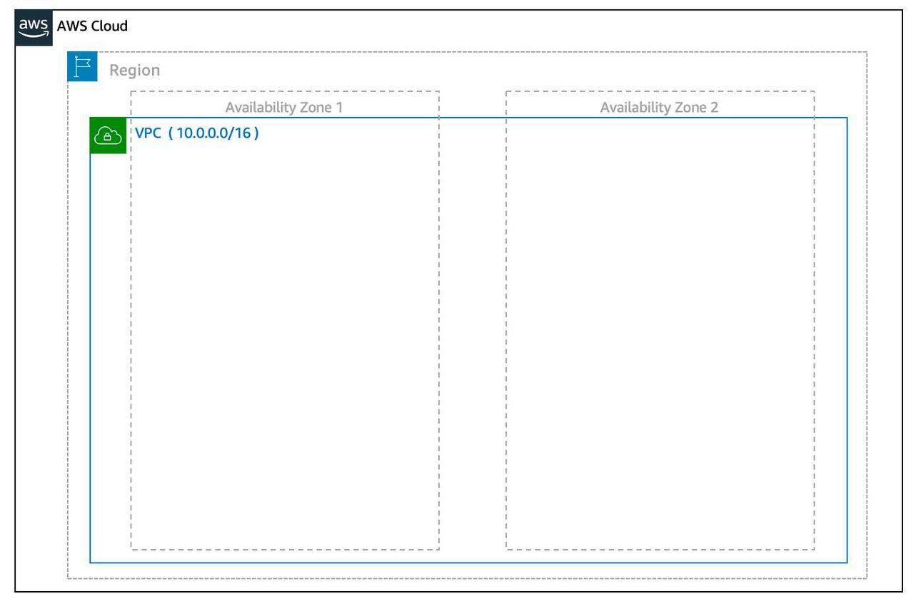
VPC requires:
- Name
- Region (VPC spans multiple AZs in that region)
- CIDR range (VPC size; up to four /16 ranges per VPC)
🧪 CLI: Create a VPC
aws ec2 create-vpc \
--cidr-block 10.0.0.0/16 \
--tag-specifications ResourceType=vpc,Tags=[{Key=Name,Value=SampleVpc}]Subnets (how you place resources)
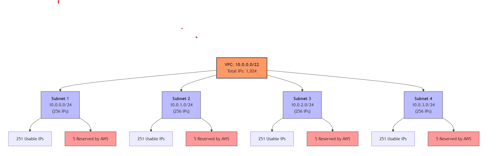
- Subnet = smaller CIDR block inside a VPC, tied to one AZ.
- Subnet CIDR must be a subset of VPC CIDR.
- EC2 instances are launched inside subnets (therefore in a specific AZ).
- For high availability, create at least two subnets in two AZs.
🧪 CLI: Create Subnets (Public + Private)
# Public subnet
aws ec2 create-subnet \
--vpc-id <vpc-id> \
--cidr-block 10.0.0.0/24
# Private subnets (in different AZs)
aws ec2 create-subnet \
--vpc-id <vpc-id> \
--cidr-block 10.0.1.0/24 \
--availability-zone ap-south-1a
aws ec2 create-subnet \
--vpc-id <vpc-id> \
--cidr-block 10.0.2.0/24 \
--availability-zone ap-south-1b💡 Subnets define where resources live (in the cidr-block set of IP addresses allocated to the subnet) and which AZ they belong to.
Reserved IPs in every subnet
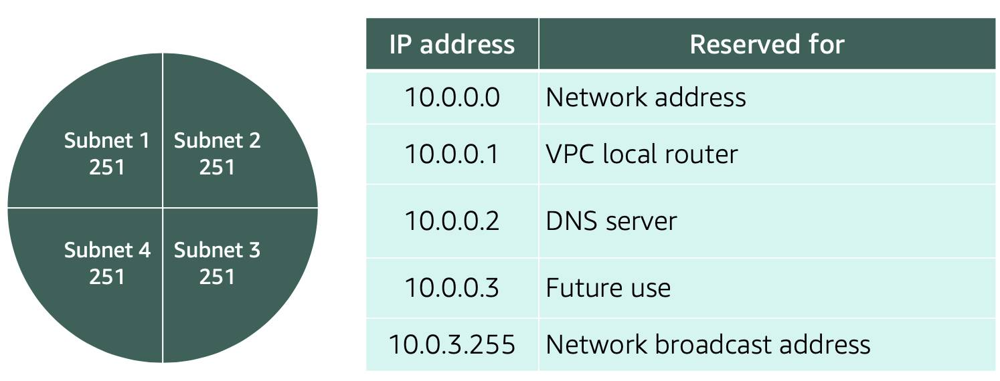
- AWS reserves 5 IP addresses per subnet for routing/DNS/management.
→ Plan subnet sizes with this overhead in mind.
Public vs Private subnets (core pattern)
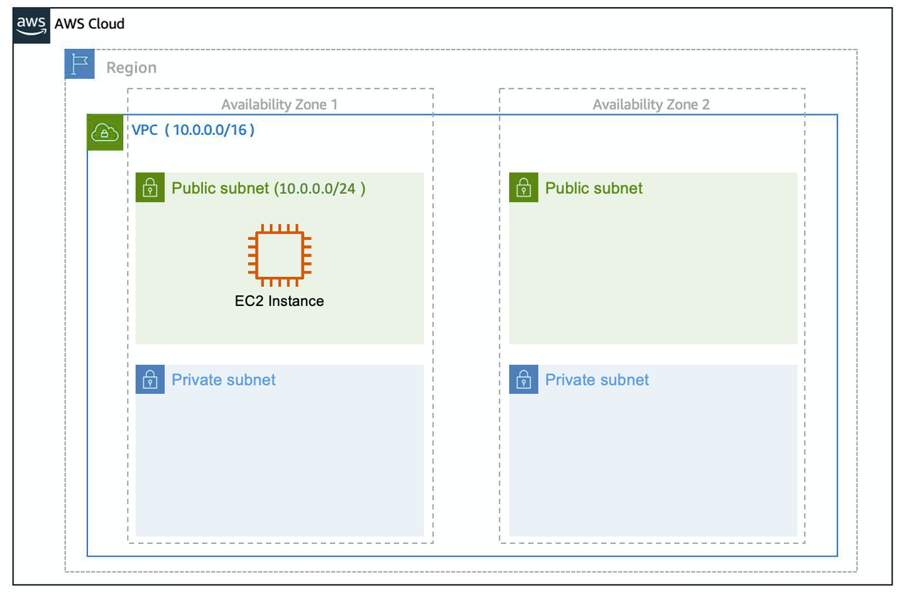
- Public subnet: has a route to an Internet Gateway (IGW).
- Private subnet: no direct IGW route; inbound from internet is blocked by design.
- Common architecture:
- Public: Load balancer
- Private: app servers + databases
- NAT Gateway: private subnet with outbound internet access (updates, external APIs)
Gateways (what they do)
Internet Gateway (IGW)
- Enables internet connectivity for the VPC (must be attached to the VPC).
Virtual Private Gateway (VGW)
- Connects VPC to another private network via encrypted VPN (with Customer Gateway on the other side).
🧪 CLI: Internet Gateway + Public Routing
# Create IGW
aws ec2 create-internet-gateway
# Attach IGW to VPC
aws ec2 attach-internet-gateway \
--internet-gateway-id <igw-id> \
--vpc-id <vpc-id>
# Create route to internet
aws ec2 create-route \
--route-table-id <route-table-id> \
--destination-cidr-block 0.0.0.0/0 \
--gateway-id <igw-id>💡 A subnet becomes public only when its route table points to an IGW.
NAT Gateway
- Allows outbound-only internet from private subnets by translating private IP → public IP.
- Stateful return traffic is allowed only for connections initiated from inside.
🧪 CLI: NAT Gateway (Private → Internet Access)
# Allocate Elastic IP
aws ec2 allocate-address
# Create NAT Gateway (must be in public subnet)
aws ec2 create-nat-gateway \
--subnet-id <public-subnet-id> \
--allocation-id <elastic-ip-allocation-id>
# Route private subnet traffic via NAT
aws ec2 create-route \
--route-table-id <private-route-table-id> \
--destination-cidr-block 0.0.0.0/0 \
--nat-gateway-id <nat-gateway-id>💡 NAT enables outbound-only internet from private subnets.
VPC Routing & Security (the essential controls)
Main Route Table
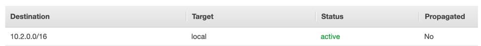
- Default route table created with the VPC.
- Contains routes (Destination → Target).
- Default behavior: allows VPC-local traffic between subnets.
Custom Route Tables
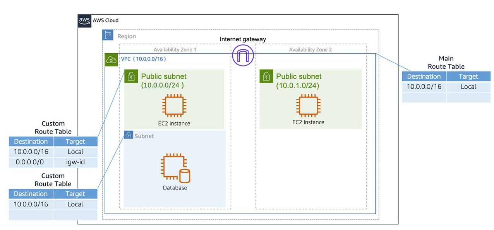
- Route tables can be attached to specific subnets for custom routing.
- If a subnet has a custom route table, it uses that instead of the main route table.
🧪 CLI: Route Table Association
aws ec2 associate-route-table \
--subnet-id <subnet-id> \
--route-table-id <route-table-id>💡 Routing behavior is controlled by which route table a subnet is associated with.
Network ACLs (subnet-level firewall)
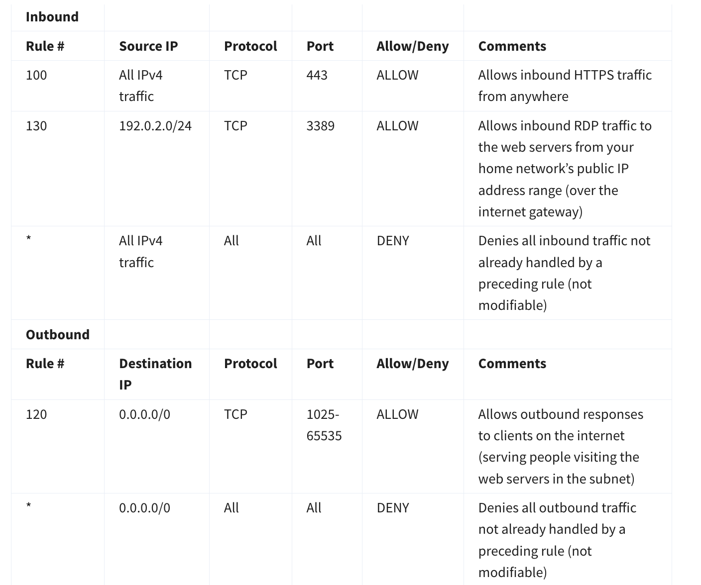
- NACL = stateless subnet firewall.
- Must allow both inbound and outbound explicitly (return traffic isn’t automatic).
- Default vs custom behavior often differs (custom typically starts restrictive).
Security Groups (instance-level firewall)
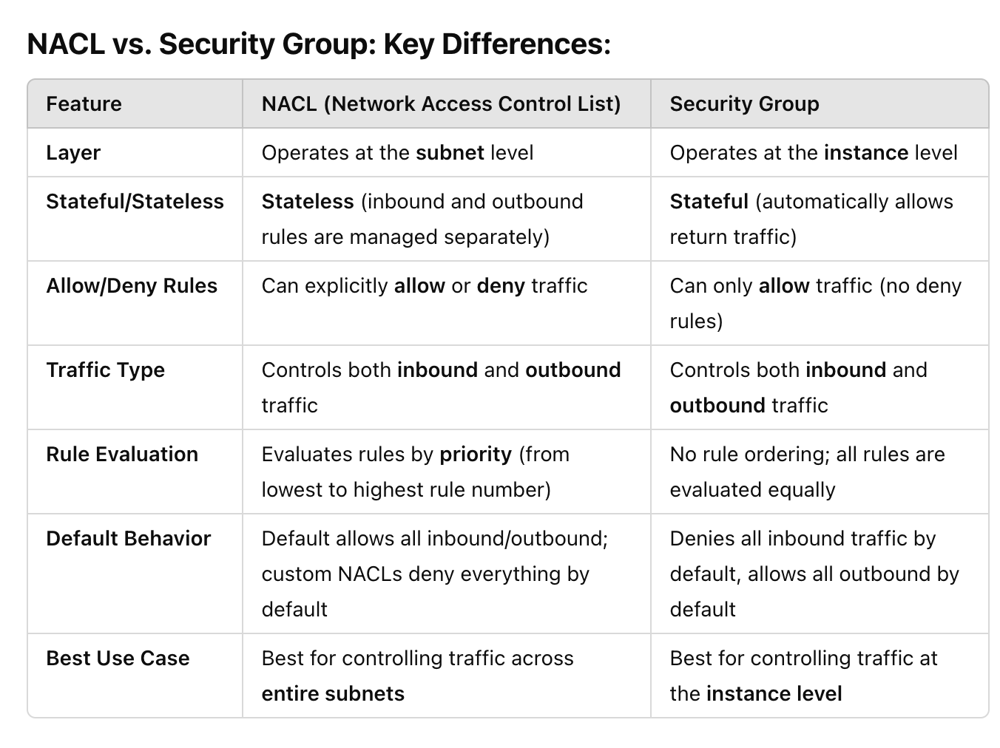
- Security Group = stateful instance firewall.
- Default SG behavior:
- Inbound: deny all
- Outbound: allow all
- For web servers, allow inbound HTTP/HTTPS:
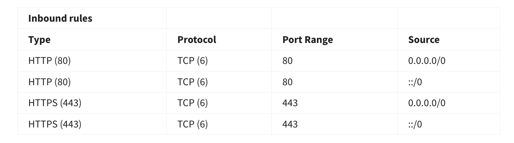
🧪 CLI: Security Group Rules (HTTP/HTTPS)
# Allow HTTP
aws ec2 authorize-security-group-ingress \
--group-id <sg-id> \
--protocol tcp \
--port 80 \
--cidr 0.0.0.0/0
# Allow HTTPS
aws ec2 authorize-security-group-ingress \
--group-id <sg-id> \
--protocol tcp \
--port 443 \
--cidr 0.0.0.0/0💡 Security Groups are stateful — return traffic is automatically allowed.
Port 80 vs 443 (only what matters)
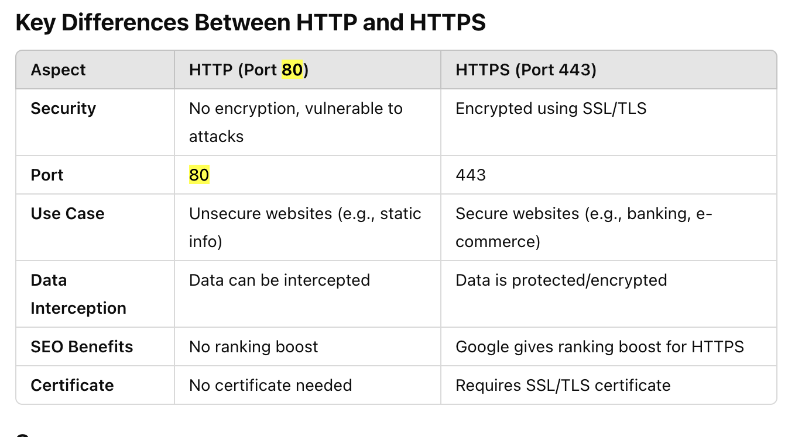
- 80 = HTTP (unencrypted)
- 443 = HTTPS (encrypted via TLS)
Multi-tier security group isolation (typical 3-tier)
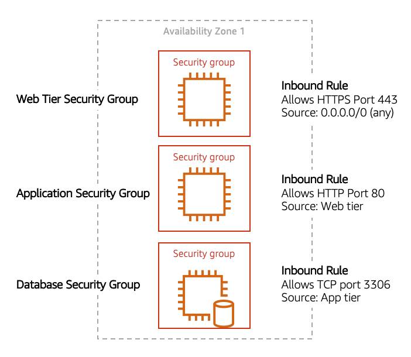
- Web tier: allow internet → web over HTTPS
- App tier: allow web → app over HTTP/needed ports
- DB tier: allow app → DB over DB port (e.g., MySQL 3306)
- This isolates tiers without VLANs (security groups enforce isolation).
How private-subnet EC2 reaches the internet
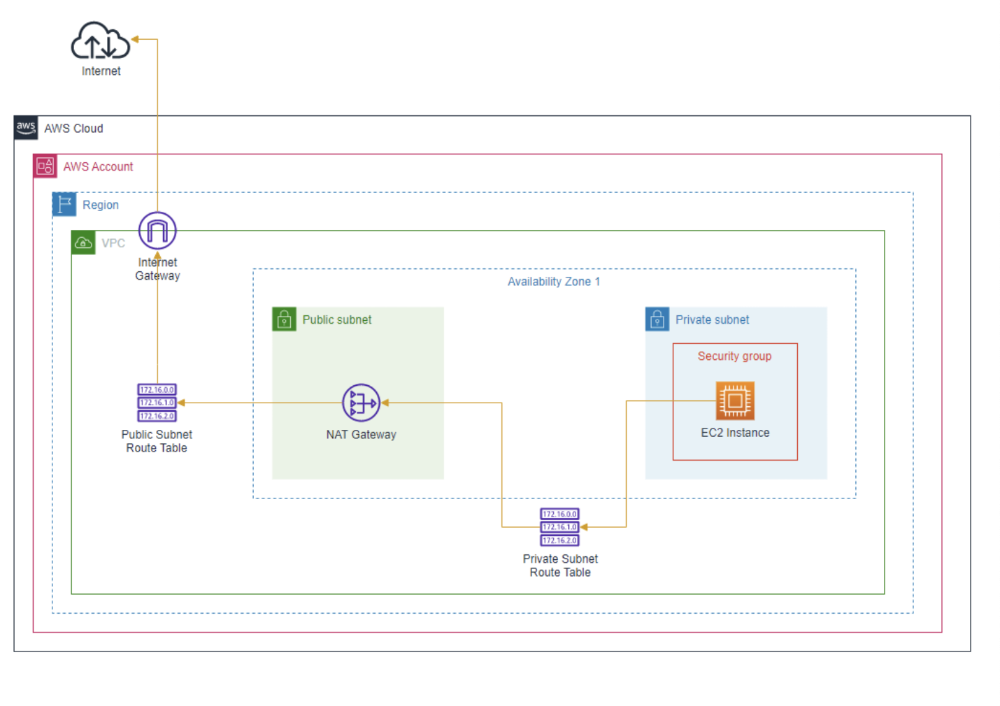
- Private EC2 → routes outbound traffic to NAT Gateway (in a public subnet) → internet.
- No direct inbound internet connectivity to private EC2.
10 VPC troubleshooting checks (public EC2 web app not loading)
- IGW attached to VPC
- Subnet route table has
0.0.0.0/0 → igw - Security Group allows inbound
80/443(and outbound allowed) - NACL allows inbound + outbound for required ports (stateless)
- Instance has a public IP (auto-assign enabled)
- Using correct HTTP vs HTTPS
- User data script ran successfully (
/var/log/cloud-init*) - Instance has correct IAM role permissions (S3/DDB/etc.)
- Your corporate/personal network isn’t blocking access
- App + web server running; check application logs
📝 Key Notes to Remember
- VPC requires Region, contains AZs and subnets
- Route tables attach to VPC (main) and subnets (custom)
- Public subnet needs IGW + route to IGW
- By default, a
security groupblocks all incoming traffic and allows all outgoing traffic. It is stateful (meaning an result of an incoming traffic is allowed automatically) - NACLs: stateless (must allow inbound + outbound). The
default NACLis associated with all subnets in the VPC by default, allowing all traffic. - CIDR determines network size: /16 larger than /28